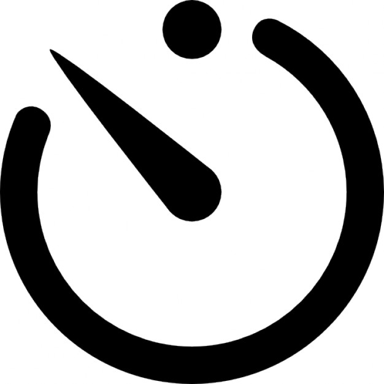

Ali Loubna
Test De
Personnalité
02
A Propos De Nous
•Le Test De Personnalité est une méthode d’évaluation des constructions de la personnalité humaine. La plupart des instruments d’évaluation de la personnalité (bien qu’on les appelle vaguement
• Ce Test est utilisé en plus de la procédure habituelle pour invalider ou confirmer une impression, et permet de mieux déterminer le profil du demandeur afin de juger de sa capacité à occuper le poste convoité et à répondre aux attentes de l'entreprise.Il permet:

• Souligner des informations précieuses sur le candidat que le recruteur n'aurait pas pu déduire ou deviner seul
• Et fournit une évaluation objective de l'évaluation personnelle subjective que le recruteur fait des candidats lors d'une réunion en face-à-face. Si les professionnels assurent que les tests de personnalités ne sont pas éliminatoires, ils restent une aide certaine à la sélection. Ce sont également des outils puissants pour surveiller les employés car ils permettent l’émergence de difficultés potentielles et font évoluer les employés vers de plus grandes responsabilités.
03
Comment
Utiliser
-

Rapide & Facile
Cela prend moins de 20 minutes.
-
Soyez Vous Meme
Répondez honnêtement, même si vous n'aimez pas la réponse.
-
Complétez tout
Essayez de ne laisser aucune réponse * neutre *.
04
Commencer Le
Test
-
Question 1
Je me vois comme une personne qui… fait un travail approfondi
-
question 2
Névrotisme : Je me vois comme une personne qui… est Déprimée et triste
-
question 3
extraversion Je me vois comme une personne qui… aime l'excitation
-
question 4
ouversture Je me vois comme une personne qui …émotionnellement stable, pas facilement bouleversée
-
question 5
agreable Je me vois comme une personne qui… n'aime pas être au centre de l'attention
-
question 6
Conscience : Je me vois comme une personne qui… Fais des plans et les suit
-
question 7
nevorisme • Je me vois comme une personne qui… s’inquiète beaucoup
-
question 8
extraversion Je me vois comme une personne qui… aime la compagnies des autres
-
question 9
ouverture Je me vois comme une personne qui… ingénieuse, un penseur profond
-
question 10
agreabilite Je me vois comme une personne qui… fait en sorte que les gens se sentent les bienvenus
-
question 11
consience Je me vois comme une personne qui… Fiable dans son travail
-
question 12
nevorisme Je me vois comme une personne qui… Panique facilement
-
question 13
exctraversion Je me vois comme une personne qui… rayonne de joie
-
question 14
ouverture Je me vois comme une personne qui… a une imagination active
-
question 15
agreabilite Je me vois comme une personne qui… fait confiance aux autres
-
question 16
consience Je me vois comme une personne qui… evite les erreurs
-
question 17
nevorisme Je me vois comme une personne qui… Se fâche facilement
-
question 18
extraversion Je me vois comme une personne qui… fait des amis facilement
-
question 19
ouverture Je me vois comme une personne qui… est ouverte, sociable
-
question 20
agreabilite Je me vois comme une personne qui…est facile à satisfaire